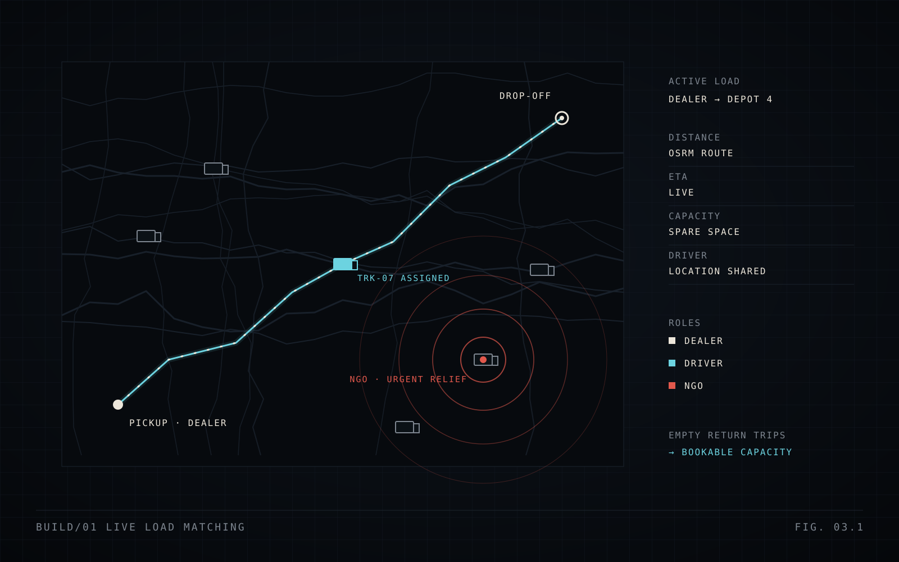

Optimal-Truck
Logistics platform that turns empty return trips into bookable capacity, matching dealers, truck drivers and NGOs in real time on a live map.
- React 19
- TypeScript
- Vite
- React Router
- Leaflet
- OSRM
- Supabase
Trucks often drive back empty. Dealers see available trucks on a live map and send loads directly or broadcast them to nearby drivers. Drivers share their location, accept work and get routed with distance and ETA. NGOs can push urgent relief requests to every available truck in the area.
- Separate dashboards for dealers, drivers and NGOs
- Live GPS tracking on Leaflet maps, with OSRM routing for distance and ETA
- Urgent humanitarian broadcasts that drivers can take at fuel-only cost or for free
- Supabase PostgreSQL with row-level security and real-time sync across sessions